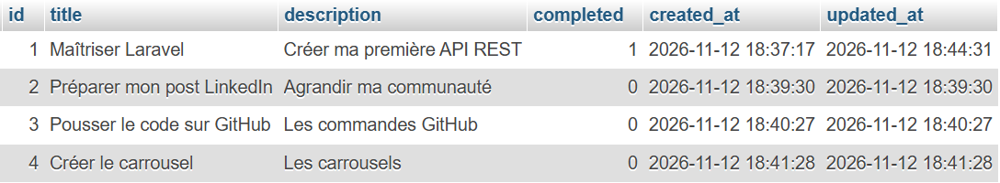
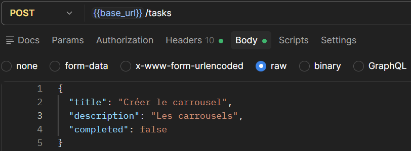
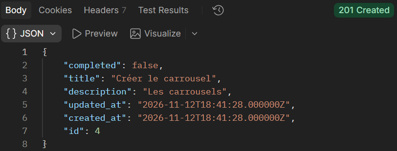
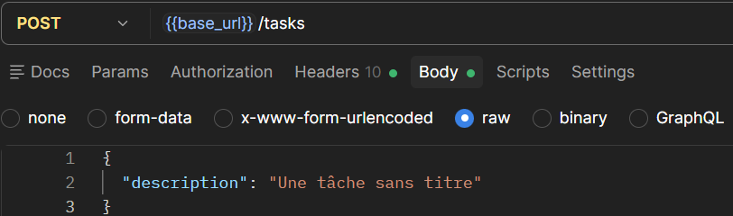
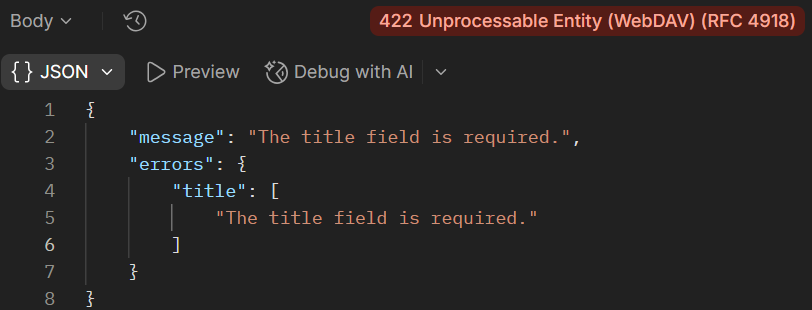
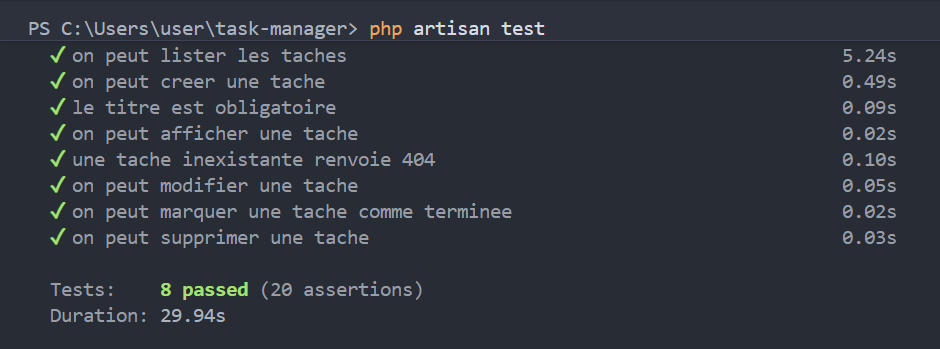

Une API de gestion de tâches, construite en 5 étapes et expliquée simplement.
# Ce que fait l'API GET /api/tasks → lister POST /api/tasks → créer PATCH /api/tasks/1/complete → terminer DELETE /api/tasks/1 → supprimer
Un serveur qui ne renvoie pas des pages web, mais des données (au format JSON), que n'importe quelle application peut utiliser.
| GET | Lire |
| POST | Créer |
| PUT | Modifier |
| DELETE | Supprimer |
Laravel suit le modèle MVC : chaque fichier a un seul rôle. Le code reste clair et facile à faire évoluer.
routes/api.phpTaskControllerTaskMySQLLa migration décrit la table en PHP. Une commande, php artisan migrate, la crée dans MySQL.
database/migrations/…_create_tasks_table.php$table->id(); $table->string('title'); $table->text('description')->nullable(); $table->boolean('completed')->default(false); $table->timestamps();

app/Models/Task.php// MySQL stocke 0 ou 1 → l'API renvoie true ou false return ['completed' => 'boolean'];
Chaque action de l'API est une méthode. Celle-ci suit 3 temps, toujours dans le même ordre.
app/Http/Controllers/Api/TaskController.phppublic function store(Request $request) { // ① Valider : on ne fait jamais confiance // aux données reçues $data = $request->validate([ 'title' => 'required|string|max:255', 'description' => 'nullable|string', 'completed' => 'boolean', ]); // ② Enregistrer en base $task = Task::create($data); // ③ Répondre : 201 = "créé" return response()->json($task, 201); }
routes/api.phpRoute::apiResource('tasks', TaskController::class); // + une route dédiée Route::patch('tasks/{task}/complete', …);
apiResource génère automatiquement toutes les routes CRUD (Create, Read, Update, Delete) :
| GET | /api/tasks | Lister |
| POST | /api/tasks | Créer |
| GET | /api/tasks/{id} | Afficher |
| PUT | /api/tasks/{id} | Modifier |
| DELETE | /api/tasks/{id} | Supprimer |
| PATCH | /api/tasks/{id}/complete | Terminer |




Tester à la main dans Postman, c'est bien. Mais après chaque modification du code, il faudrait tout refaire…
Avec PHPUnit, une seule commande vérifie toute l'API en quelques secondes :

// Un test = un scénario vérifié automatiquement $this->postJson('/api/tasks', ['description' => '…']) ->assertUnprocessable(); // 422 attendu